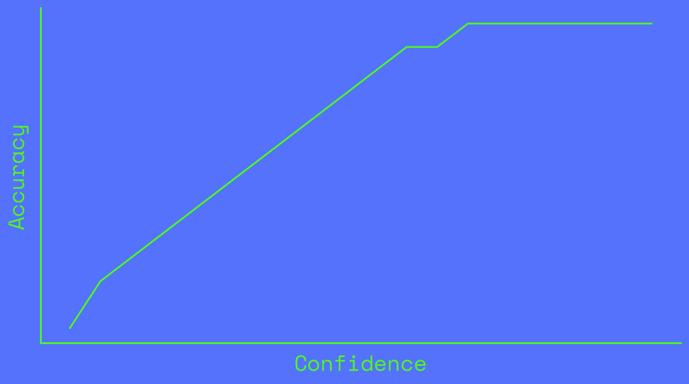
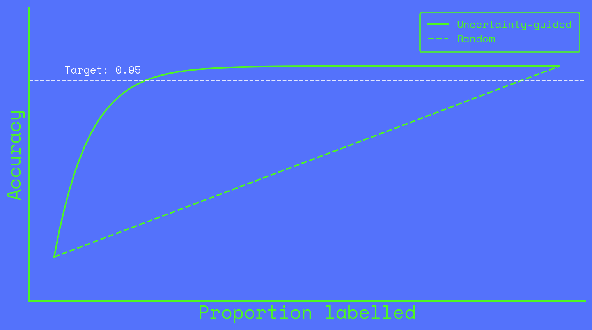
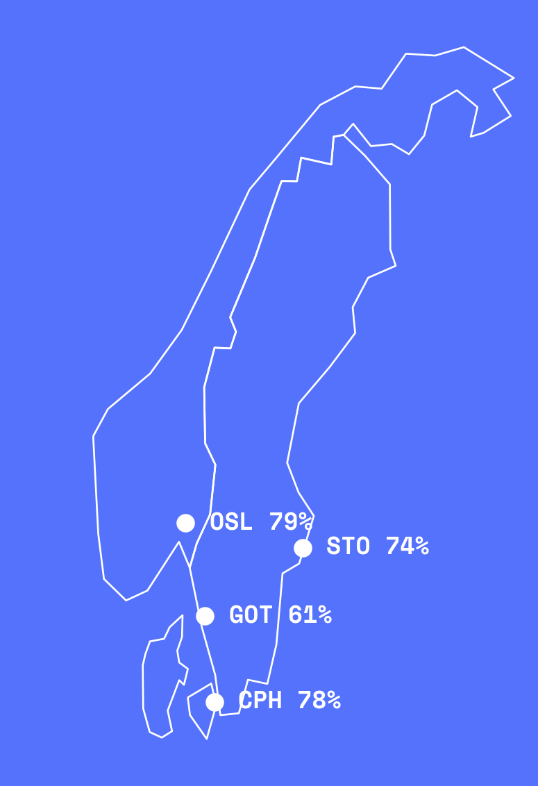
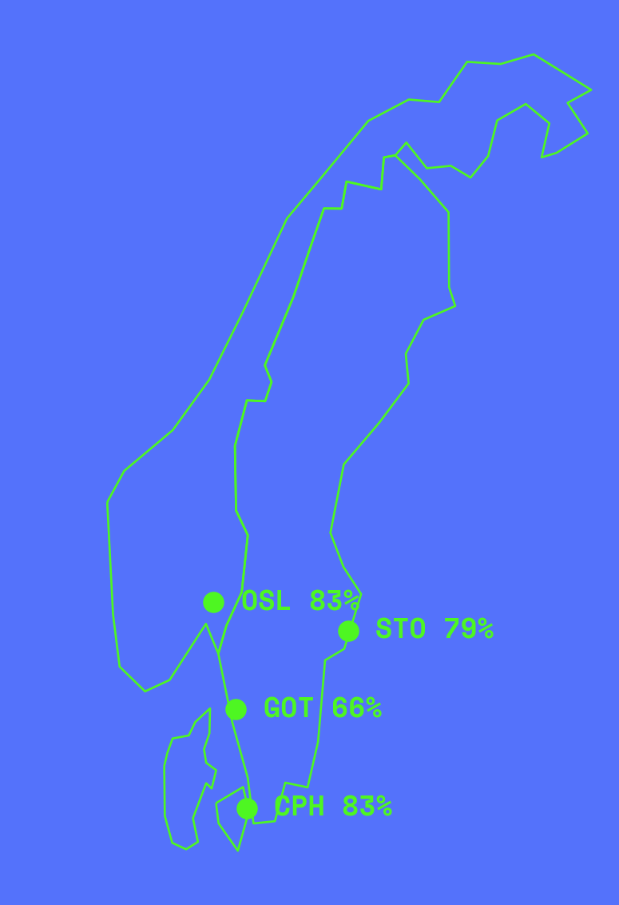

Know what you don’t know
Building better network data with AI
Hugo Nilsson – Simactis / University of Western Australia
17 June 2026
“AI could eliminate half of all entry-level white-collar jobs within five years.”
– Dario Amodei, CEO Anthropic, May 2025
Coding networks in Saturn.
Replace humans with confident AI ⇒ deceptive perfection
Equip humans with humble AI ⇒ honest imperfection
It lets you know what it doesn’t know.
Land use 💩 Population 💩 Parameters 💩 ⇒ 👑 Model ⇒ Forecasts 💩 Network ❓
We can only measure accuracy where we have ground truth.
Confidence scores are available across the full dataset.

Extrapolate to unlabelled data.
Assumption: confidence and accuracy are correlated across both labelled and unlabelled data.
Lane count accuracy by road type
+------------------+------------+----------+ | Road type | Confidence | Accuracy | +------------------+------------+----------+ | Residential | 0.91 | 0.84 | | Unclassified | 0.88 | 0.82 | | Motorway | 0.85 | 0.82 | | Tertiary | 0.85 | 0.79 | | Secondary | 0.82 | 0.79 | | Primary | 0.82 | 0.79 | | Trunk | 0.80 | 0.74 | | Trunk link | 0.79 | 0.58 | +------------------+------------+----------+

Estimating quality across the full network
0% labelled

20% labelled

Data-driven QA and audit trails for every network attribute.